自習用ウェブ教材です。読み、考え、答えてから、隠れた答えを開いてください。
画像対応を修正済み
合金→熱処理→刀→性質の画像対応を修正しました。
中心アイデア
格子・すべり・合金・熱処理
医療との関係
道具には硬さだけでなく、性質のバランスが必要です。
授業の流れ
Part 1 — なぜ材料は違うふるまいをするのか
中心の問いは簡単です。なぜある材料は元に戻り、別の材料は曲がったまま、または壊れるのでしょうか。
材料の性質
弾性変形、塑性変形、合金、熱処理、機械的性質。
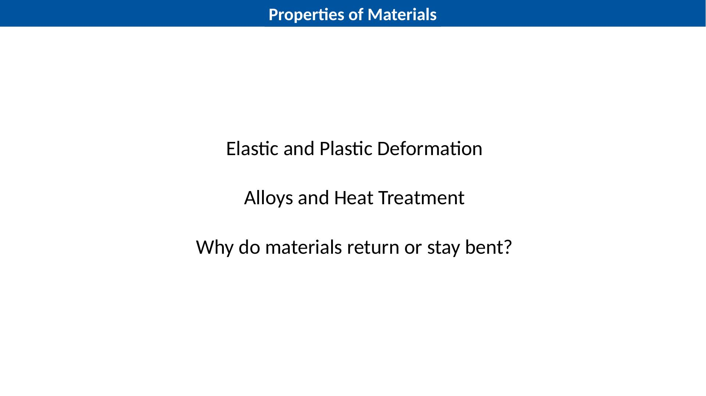
前回、材料選択が重要であることを学びました。今回はさらに深く見ます。
材料がなぜ違うふるまいをするのかを学びます。原子の並び、すべり、合金、熱処理が関係します。
医療器具や病院設備では、安全で、強く、用途に合った材料が必要です。
考えて答えてください
材料の強さが重要な医療用品を1つ挙げてください。
答えを見る
例：手術道具、病院ベッド、車いすフレーム、針、ねじ。
なぜ一方のワイヤーは戻り、他方は曲がったままなのか
同じ力でも、結果は違います。
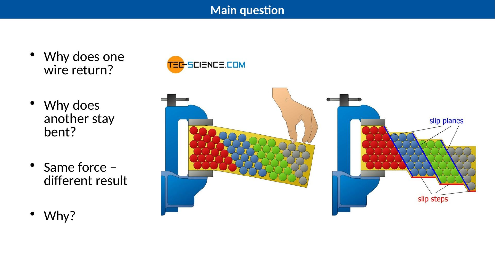
2本のワイヤーを想像してください。同じ力を加えます。一方は元の形に戻ります。他方は曲がったままです。
これは材料の内部構造と機械的性質が違うからです。
今日は、弾性変形と塑性変形の違いを学びます。
考えて答えてください
ワイヤーが元の形に戻る場合、それは何変形ですか。
答えを見る
弾性変形です。
Part 2 — 金属の中：原子と結晶格子
変形を理解するには、金属の中を見る必要があります。
金属の結晶格子
金属には規則的な結晶格子があります。
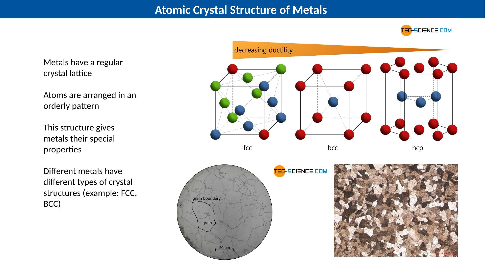
金属は、原子が規則的に並んだ構造を持ちます。この構造を結晶格子と呼びます。
原子の並び方は、金属の性質に影響します。
重要なのは、内部構造が外のふるまいに影響することです。
考えて答えてください
なぜ病院の道具について話すときに原子を見るのですか。
答えを見る
原子の並び方が、強さ、硬さ、曲がり方、壊れ方、安全性に影響するからです。
金属結合：電子の海
金属が少し伸びたり電気を通したりする理由の一部です。
金属の中では、正の金属イオンが格子に並んでいます。その周りに自由電子があります。
自由電子は金属の中を動くことができます。
現在のスライドには別の金属結合図がないため、この部分はテキストだけで説明します。
考えて答えてください
なぜ金属は電気をよく通しますか。
答えを見る
動ける自由電子があるからです。
Part 3 — 弾性変形と塑性変形
小さい力では弾性変形、大きい力では塑性変形が起こることがあります。
弾性変形
原子は少し動き、元に戻ります。
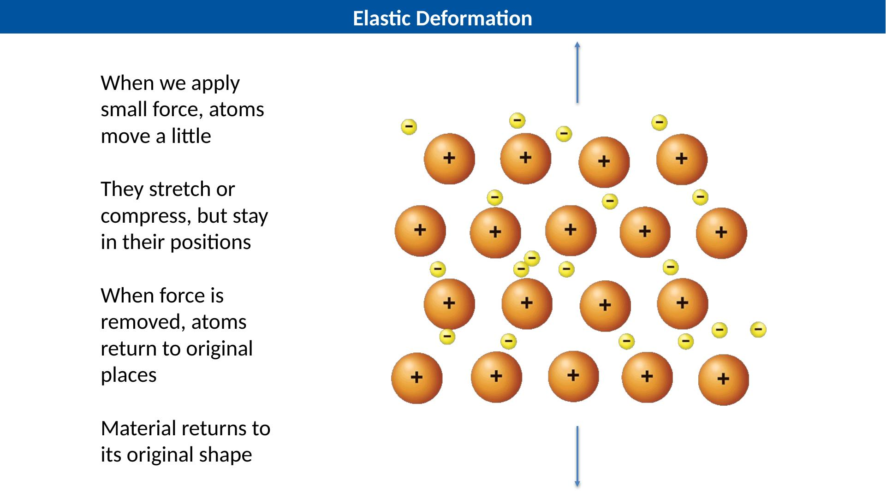
弾性変形は、力が大きすぎないときに起こります。
原子は少し動きますが、永久に場所を変えません。
力を取り除くと、材料は元の形に戻ります。
考えて答えてください
弾性変形では、力を取り除くと何が起こりますか。
答えを見る
材料は元の形に戻ります。
塑性変形
原子がすべり面に沿って永久に動きます。
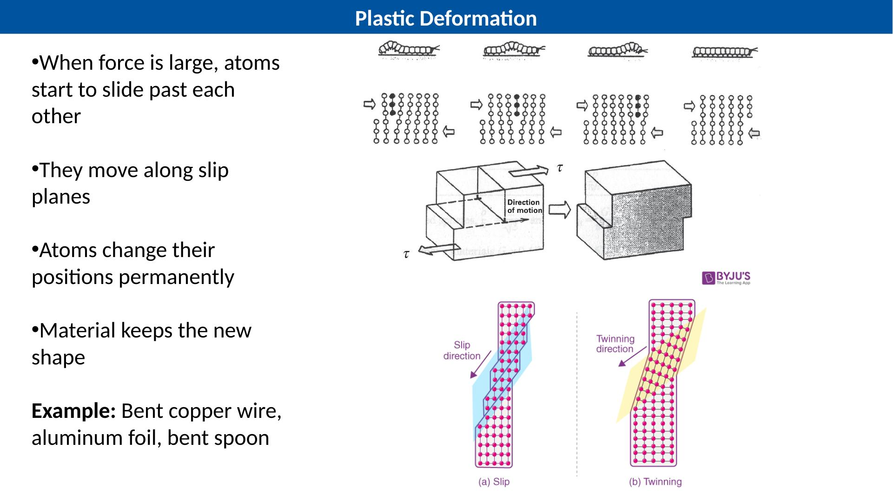
塑性変形は、力が十分に大きいときに起こります。
原子の層がすべり面に沿って動きます。
力を取り除いても、材料は新しい形のままです。
考えて答えてください
スプーンが曲がったままなら、何変形ですか。
答えを見る
塑性変形です。
弾性変形 vs 塑性変形
重要な違いは、元に戻るか永久に変わるかです。
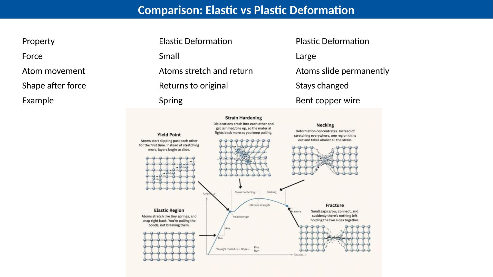
弾性変形：小さい力、原子は伸びて戻る、形が戻る。
塑性変形：大きい力、原子が永久にすべる、形が変わったまま。
Elastic
力を取り除くと元の形に戻る。
Plastic
力を取り除いても新しい形のまま。
考えて答えてください
ばねに必要なのは弾性ですか、塑性ですか。
答えを見る
弾性です。ばねは元の形に戻る必要があります。
Part 4 — 合金と熱処理
純金属だけでは足りないことが多いです。性質を変える方法として合金化と熱処理があります。
合金
合金は2つ以上の金属や元素を混ぜた材料です。
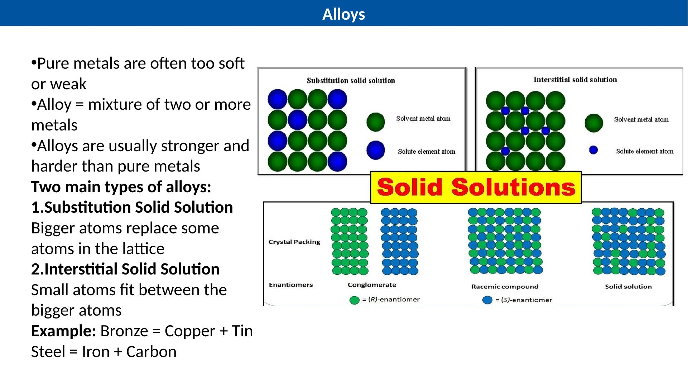
純金属は柔らかすぎたり弱すぎたりすることがあります。
合金は性質をよくするために作られます。青銅は銅＋スズです。鋼は鉄＋炭素です。
考えて答えてください
鋼は簡単に言うと何からできていますか。
答えを見る
鉄＋炭素です。
なぜ合金は強いのか
違う原子がすべりを邪魔します。
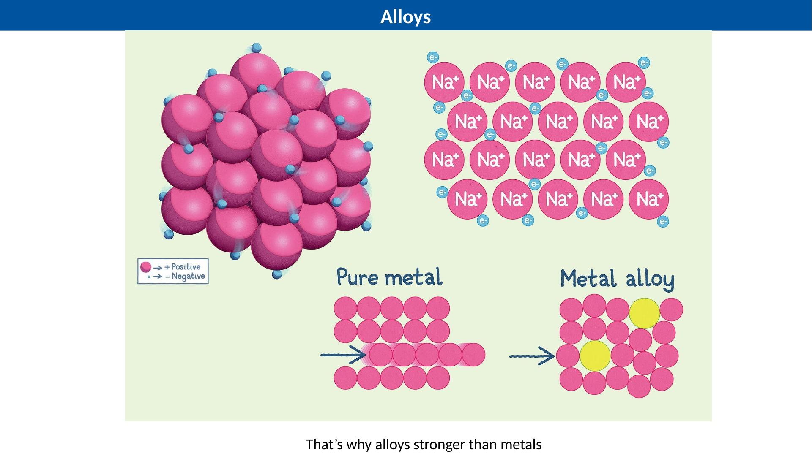
純金属では、原子の層がすべりやすいことがあります。
合金では、大きさの違う原子が完全な格子を乱します。
そのためすべりが難しくなり、材料が強く硬くなることがあります。
考えて答えてください
なぜ炭素を加えると鉄が強くなることがありますか。
答えを見る
炭素原子が鉄の格子を乱し、原子のすべりを難しくするからです。
熱処理と焼入れ
加熱と冷却の管理で性質が変わります。
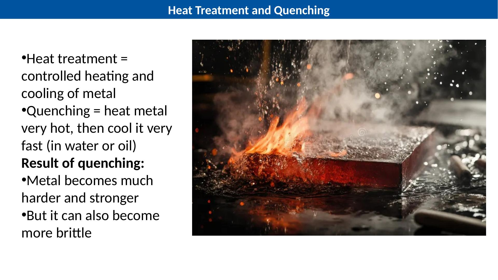
熱処理とは、金属を管理して加熱・冷却することです。
焼入れとは、金属を高温にしてから、水や油で急速に冷やすことです。
硬く強くなることがありますが、脆くなることもあります。
考えて答えてください
焼入れの欠点は何ですか。
答えを見る
金属が脆くなる可能性があります。
焼入れの図
熱い金属を急速に冷やします。
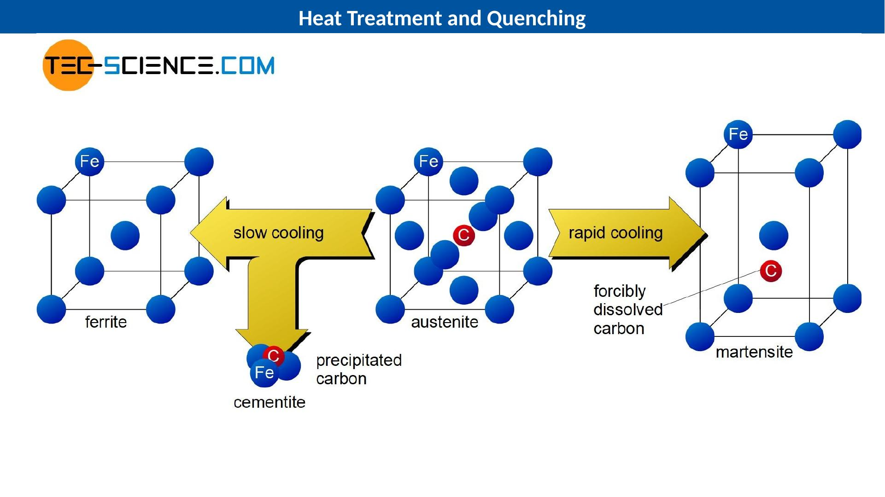
図は、冷却速度が内部構造を変えることを示します。
急速冷却は金属の内部構造を変えます。
1つの性質をよくすると、別の性質が悪くなることがあります。
考えて答えてください
なぜ熱処理は管理が必要ですか。
答えを見る
管理が悪いと脆すぎたり、用途に合わなくなったりするからです。
日本刀：材料科学の例
硬い刃と粘りのある芯を組み合わせます。
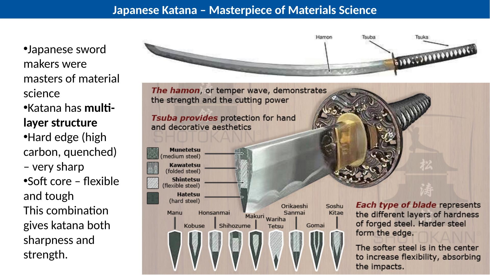
刃は高炭素で焼入れされ、とても硬く鋭くなります。
芯はより柔らかく柔軟で、エネルギーを吸収して折れにくくします。
これは硬さだけでなく、性質のバランスが重要であることを示します。
考えて答えてください
非常に硬い刃はなぜ役に立ちますか。
答えを見る
鋭さを保ち、よく切れるからです。
Part 5 — 機械的性質
これらの言葉は、医療道具や病院設備の材料を選ぶ助けになります。
材料の機械的性質
技術者には正確な言葉が必要です。
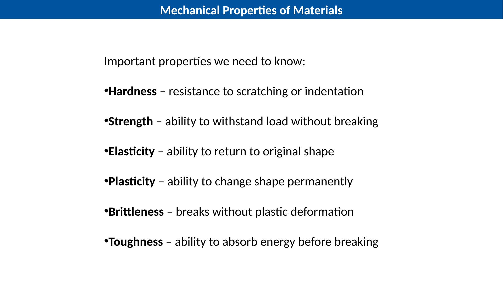
硬さ：傷やへこみに対する抵抗。
強さ：壊れずに荷重に耐える能力。
弾性：元の形に戻る能力。塑性：永久に形を変える能力。
脆さ：ほとんど塑性変形せずに壊れる性質。靭性：壊れる前にエネルギーを吸収する能力。
考えて答えてください
元の形に戻る能力は何ですか。
答えを見る
弾性です。
硬さ
硬さは、傷やへこみにくさです。
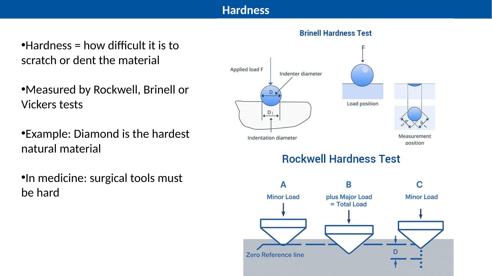
硬さは、材料がどれだけ傷つきにくいか、へこみにくいかを示します。
Rockwell、Brinell、Vickers などの試験で測れます。
医療の切削工具には高い硬さが必要です。鋭さを保つためです。
考えて答えてください
なぜ手術用の切る道具には硬さが必要ですか。
答えを見る
鋭さを保ち、きれいに切るためです。
強さと靭性
強さと靭性は同じではありません。
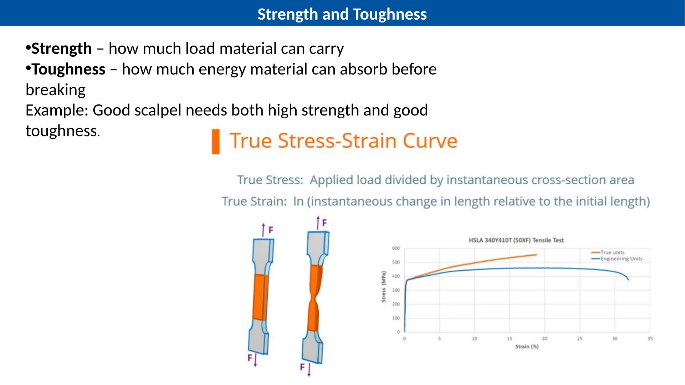
強さは、材料が壊れずにどれだけ荷重に耐えられるかです。
靭性は、材料が壊れる前にどれだけエネルギーを吸収できるかです。
よい医療道具には両方が必要なことが多いです。
考えて答えてください
壊れる前にエネルギーを吸収する性質は何ですか。
答えを見る
靭性です。
軟鋼 vs 白鋳鉄
硬いほど引張に強いとは限りません。
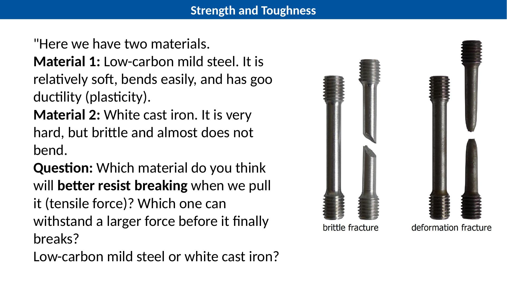
低炭素軟鋼は比較的柔らかく、曲がりやすく、延性があります。
白鋳鉄は非常に硬いですが、脆く、ほとんど曲がりません。
引っ張りでは、低炭素軟鋼の方が壊れにくいことがあります。伸びてエネルギーを吸収できるからです。
考えて答えてください
引っ張りに強いのは、低炭素軟鋼と白鋳鉄のどちらですか。
答えを見る
低炭素軟鋼です。柔らかいですが、延性と靭性があります。白鋳鉄は硬いですが脆いです。
Part 6 — まとめと最終活動
原子構造、変形、合金、熱処理、機械的性質をつなげます。
覚えるべきこと
材料のふるまいは、内部構造と処理によって変わります。
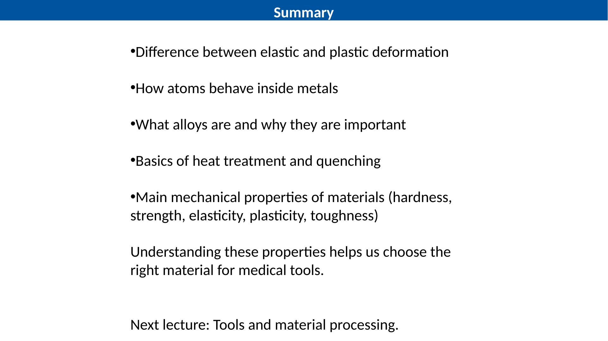
弾性変形は元に戻ります。塑性変形は形が変わったままです。
合金は原子のすべりを難しくし、強くなることがあります。
熱処理は硬さと強さを高めることがありますが、脆さも増えることがあります。
よい工学はバランスです。
考えて答えてください
医療道具を1つ選んでください。重要な性質を2つ挙げてください。
答えを見る
例：メス → 硬さと靭性。病院ベッドフレーム → 強さと靭性。
{kind=link}